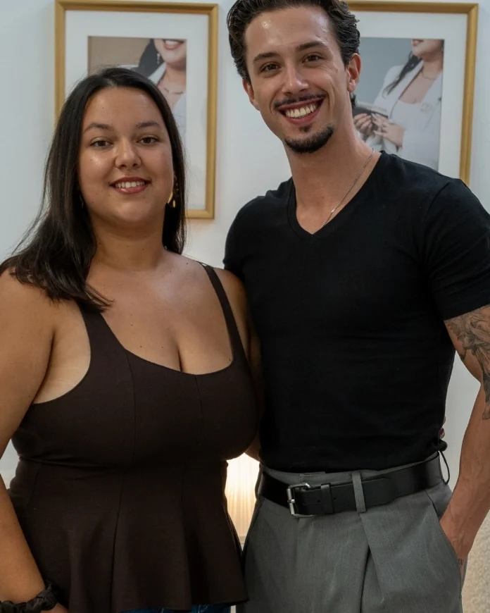
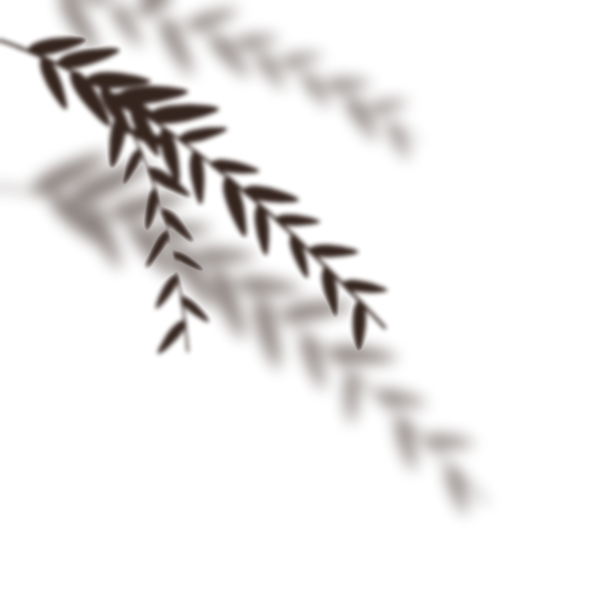
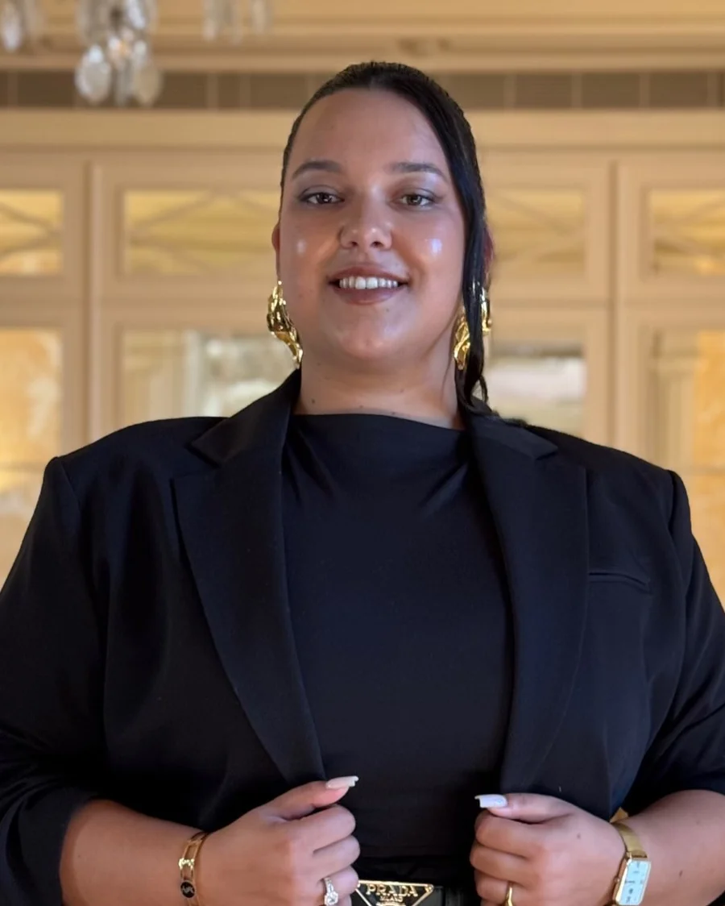
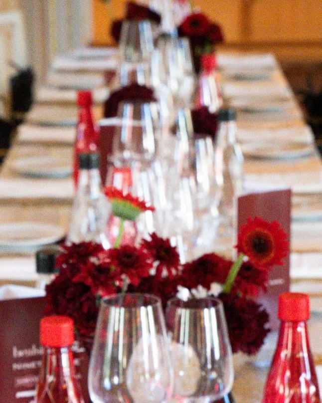
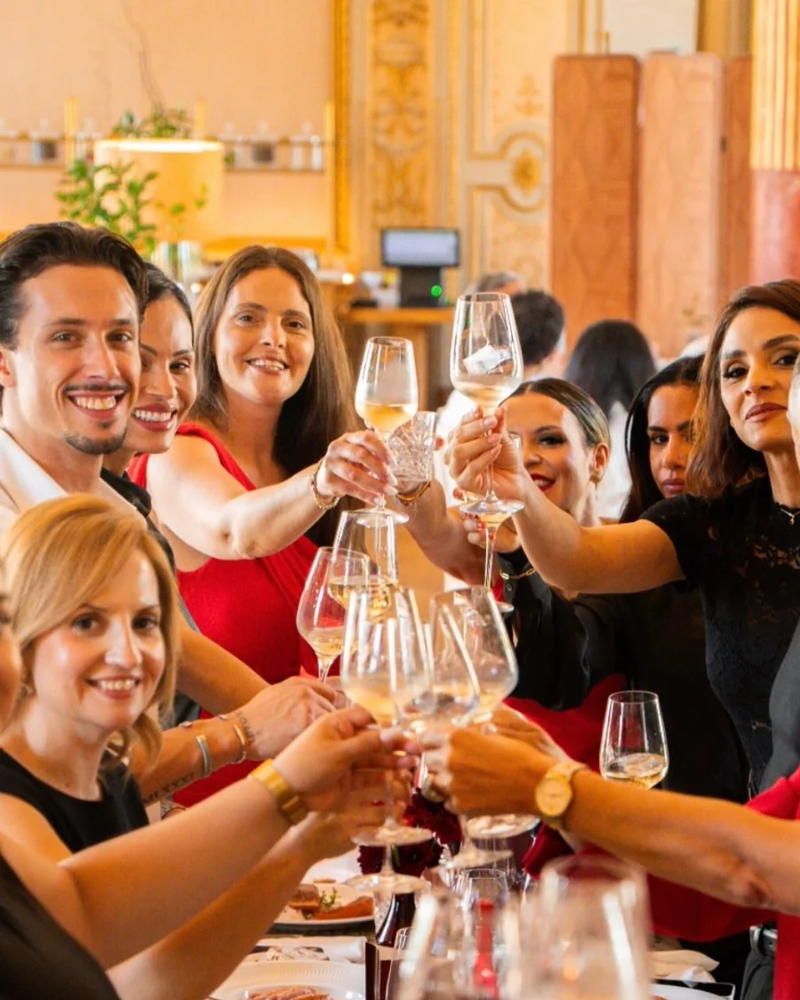
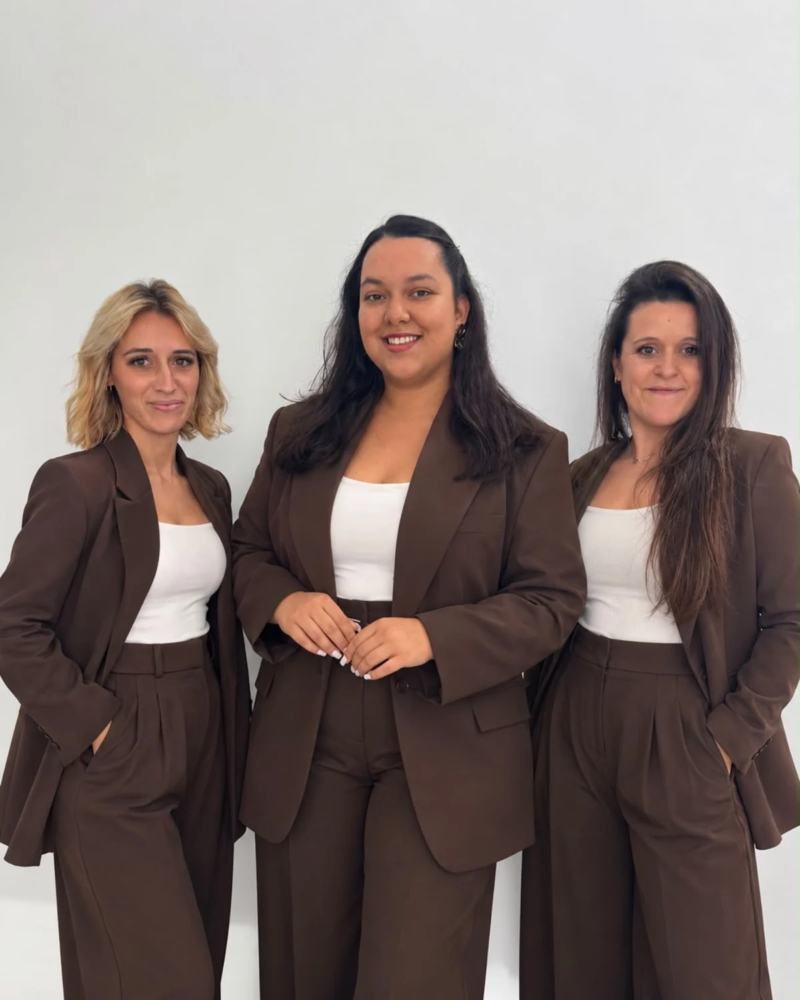

Fama e Fofoca · out. 2026

Especialidade
Branqueamento dentário estético
Também
Tooth gems, micropigmentação e lifting
Onde
Aveiro, Portugal
Atendimento
Por marcação, com avaliação
O teu sorriso merece atenção e cuidado.
A especialidade da Ana. Um sorriso mais claro e natural, com um protocolo ajustado ao teu tom de partida e à tua sensibilidade.

Registo do tom atual, avaliação da sensibilidade e do que esperas do resultado.
Proteção das gengivas e preparação cuidada da superfície dos dentes.
Aplicação do gel e ativação com luz, num ambiente calmo e confortável.
Novo registo do tom, comparação do antes e depois e os cuidados para o resultado durar.
Os dentes ficam mais recetivos a pigmentos logo após a sessão. Para manter o tom, evita:
Não é um procedimento doloroso. Algumas pessoas sentem sensibilidade passageira durante ou depois da sessão, e é por isso que a avaliação inicial pergunta pela tua sensibilidade.
Depende muito dos hábitos de cada pessoa: café, vinho, tabaco e higiene oral fazem diferença. Na sessão a Ana explica os cuidados para o resultado durar o máximo possível.
Varia com o tom de partida e com o tom que procuras. Fica definido na avaliação, antes de começar.
Não. O gel atua no esmalte natural. Se tens dentes restaurados à frente, fala disso na marcação para avaliarem juntas o resultado esperado.
Grávidas, lactantes e menores de idade, e quem tem cáries ou gengivas inflamadas por tratar. Em caso de dúvida, a avaliação esclarece.
Valores e duração confirmados na marcação.
Um sorriso mais claro e natural, com protocolo ajustado ao teu tom e à tua sensibilidade.
MarcarPequenos cristais aplicados à superfície do dente, sem desgaste.
MarcarCor e definição com naturalidade, para realçar traços sem mudar a tua expressão.
MarcarPestanas curvadas e olhar desperto, sem extensões.
MarcarTratamento para atenuar estrias e uniformizar a textura da pele, sessão a sessão.
MarcarPara oferecer qualquer tratamento, entregue numa caixa Ana Silva.
Pedir voucher
Especialista em branqueamento dentário estético, com espaço próprio em Aveiro.
Cada atendimento começa por ouvir: o que te incomoda, o que procuras e o sorriso com que queres sair. Só depois vem o protocolo, pensado para ti.
É também formadora e mentora de profissionais de estética, e acredita que a confiança se constrói antes de qualquer venda.
Para profissionais que querem aprender a técnica e construir um negócio próprio na estética.

Branqueamento dentário estético e tooth gems, da teoria à prática com modelo.
Posicionamento, conteúdo e comunicação para quem quer viver da estética.
Sobre empreendedorismo feminino e a construção do próprio negócio.
Saber das próximas turmas“Antes de vender, é preciso criar confiança.”
Ana Silva
Aparições recentes e encontros do setor.

Fama e Fofoca · out. 2026

The Beauty Business · nov. 2026

Impala · nov. 2026

Empreender

Um espaço partilhado por três profissionais: manicure, estética e branqueamento dentário, e moda e acessórios.
@mimaa.teePreenche o pedido e a mensagem fica pronta para o WhatsApp da Ana. Ela responde com disponibilidade, valores e os cuidados a ter antes da sessão.